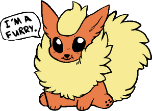

Mariteaux

This article has a lot of issues.
This article is outdated, new events have occurred surrounding this person, a lot of links are broken, update the image to better reflect their new online profile.
This should be fixed as soon as possible!
2019-03-05

[12:14 PM] kat: @Mariteaux what the fuck is wrong with you mane
mariteaux (no caps) is an American Neocities user who joined in April 2018.
His Neocities site hosts album reviews, music he's written, and his mod work, including custom levels for the original Quake. A preservationist at heart, mariteaux is best known outside of Neocities for founding the Valve Developer Union, a site and active Discord about archiving tools and information for games such as Quake, Half-Life, and Counter-Strike.
mariteaux's first two months with the community were rather rocky. Infamously, he lead a crusade against the unofficial Neocities Discord, and its owner, rocketmix, over moderation decisions. This lead to the formation of other Neocities Discord servers, all of which are now defunct. mariteaux took a month off from Neocities to work out personal issues, and returned in August 2018. He is currently working on a Neocities site directory in the spirit of the former DMOZ, tentatively titled Districts, and a few unnamed fansites.
mariteaux is often asked whether or not he happens to be a furry, thanks to his using the Pokémon Flareon as his avatar.
[11:08 AM] HologrxphicStar: im not even a furry
[11:12 AM] Mariteaux: neither am i, i'm just on a mission to find the gayest flareon icon and use that
The answer continues to be a mystery for everyone involved, including mariteaux. The above image, drawn by Gwta, is purely conjecture.
In his personal life, mariteaux is currently in his first year of college, studying media production. He enjoys noisy, experimental rock music (notably the band Failure, who he has written about several times), fantasy writing, rhythm games, and late 90s FPS titles such as GoldenEye and TimeSplitters.
References
I. mariteaux's website
https://mariteaux.neocities.org/
This page was last updated: 08/13/2018 @ 02:54
In total this page has had 1 updates since it was uploaded.
★